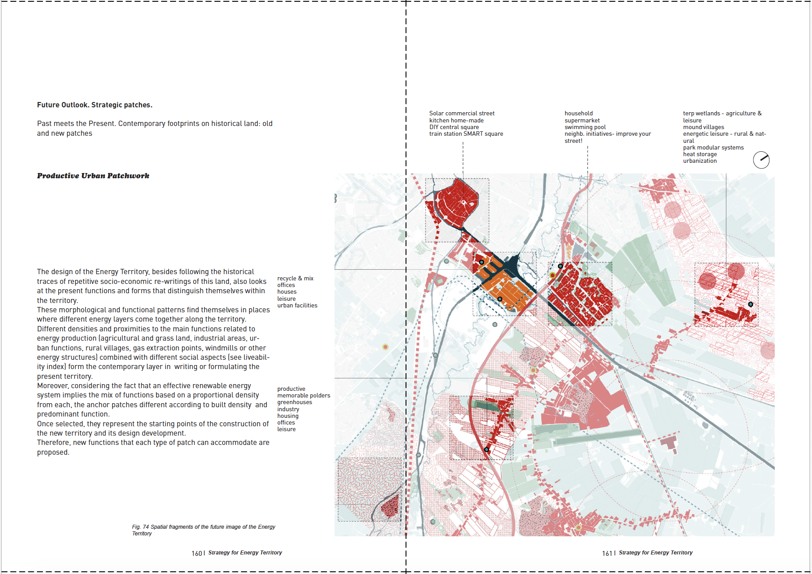

![]()
graph LR
A[Data collection]-->B[Pre-processing]
B-->C[Text mining]
C-->D[Visualisation]
D-->B
D-->E[Results]
The Legacy of the European Post-Master in Urbanism at TU Delft: A Text Mining Approach
Abstract
This paper aims to describe the legacy of the European post-Master in Urbanism (EMU) that ran between 2005 and 2021 at TU Delft. To that end, it reports on the analysis of the graduation theses produced over the duration of the program. The text mining approach allows for a close scrutiny of the latent thematic patterns, and evolutions thereof, found in the full texts of the theses. Results reveal 5 topics that are to a large extent consistent with the set-up of the program in two thematic semesters at TU Delft and three possible exchange semester locations, each characterised by a specific approach. The paper discusses the relevance of the findings for the state of the profession and education in the field. Set up as a research compendium accompanied by a published FAIR dataset and an interactive dashboard, the research is fully reproducible and enables further analysis.
Keywords
urbanism; education; post-master; text mining; topic modeling
Introduction
The research presented in this paper was prompted by the closure of the European post-Master in Urbanism (EMU) at TU Delft in 2021. The EMU is an advanced program started jointly by TU Delft, KU Leuven, UPC Barcelona and Università IUAV di Venezia in 2005. The program distinguished itself internationally as an advanced post-master open only to applicants with a prior MSc degree and practical experience in urbanism or a related field. With a combined research and design curriculum, it provided a bridge towards both advanced practice and research trajectories after graduation. All students followed an exchange semester at one of the other three program universities, allowing them to have a broad, international view on the field of urbanism. Although located in Europe and named “European”, its geographic scope was global (see Figure 3), visible especially at the stage of graduation, considering that a large majority of students were of non-European origin and chose to work on a case from their home location.
In 2021, TU Delft left the program, but its approach has remained imprinted on the TU Delft approach to urbanism. Its core topics Urban Region Networks (Semester 1) and Constructing Sustainable Urban Landscapes (Semester 2), as well as the influence of the partner universities—mostly IUAV Venice where most TU-Delft-hosted students spent their exchange semesters—are visible in the current MSc Urbanism and, to some extent, MSc Landscape Architecture tracks. There is general agreement on the considerable impact of the EMU on education and practice targeting sustainable urbanism, but why and how it is so remains implicit. Understanding what made the program impactful would be beneficial for targeted urbanism education and practice in response to current societal challenges. Having a close look at the assignments that were addressed by the program as well as research and design approaches used to tackle those topics throughout the years can provide valuable insight into what are the core, stable elements of urbanism practice, on the one hand, and how does the field need to adapt to changing societal challenges, on the other.
To describe the legacy of the EMU program, including the distinctive features of its didactic approach, this paper aims to reveal the main topics taught in it and how those topics had evolved over the years of the program. To that end, the research presented in this paper employed a text mining approach targeting the output of the EMU program: 96 theses with a rounded average of 23,000 words produced over the years for the duration of the program between 2005-2021. Although the corpus of theses is relatively small, it is large enough to make a manually conducted quantitative analytical approach unfeasible.
A text mining approach
The rise of computational social sciences (Wallach, 2018) provides tools and methods to summarise large sets of data that would not be possible with human annotation (Blei, 2012). Often such data is available in unstructured textual form and formats that are not easily machine-readable, such as Adobe PDF or Microsoft Word documents (Benchimol et al., 2022). While quantitative text analysis have been widely adopted in computational social sciences such as linguistics, communication, and political science (Benchimol et al., 2022), urbanism research, in general, and urbanism education studies, in particular, rarely use statistical methods such as topic modeling to analyse unstructured data. This is especially a missed opportunity considering that theses are representative outputs of educational programs that are increasingly available in digital repositories—the TU Delft repository was established in 2007, which is also the first graduation year of the EMU, and has been steadily growing since then. Patterns revealed in past education can potentially better inform future decisions in education in the field.
Acknowledging that opportunity, this paper leverages topic modeling as an unsupervised machine learning method to reveal latent semantic structure and relationships between latent topics in a large document collection (Muchene and Safari, 2021). Latent Dirichlet Allocation (LDA) is broadly adopted in topic modeling (Muchene and Safari, 2021) as it uses a soft clustering algorithm in which objects can be part of multiple clusters (mixed membership approach) as opposed to hard clustering algorithms (single membership approaches) (Rüdiger et al., 2022). LDA uses as input a bag-of-words (BOW) model, more generally called the vector space model (VSM), in which documents in a corpus are decomposed into two low-dimensional matrices for document-topic distribution and word-topic distribution, respectively. Although topic modeling in general automates the process of identifying topics through clustering, those topics need to be manually interpreted and labelled after the application of the algorithm (Rüdiger et al., 2022). Moreover, arguing for the right algorithm and a suitable number of clusters remains a challenge (Rüdiger et al., 2022).
In addition to describing the legacy of the EMU, this paper showcases a reproducible research workflow. Together with a published FAIR dataset, it forms a reproducible research compendium. The analyses presented in this paper were carried out in the free and open-source statistical programming software R (R Core Team, 2023). The research compendium is available at [ADD CITATION], the data is published in th 4TU.ResearchData repository (Forgaci and Wilczynska, 2023) and it is available for exploration in a Shiny dashboard at http://mintemu_shiny.bk.tudelft.nl:3838/mintemu/.
The following section describes the case study data, pre-processing steps and the topic modeling workflow. The results of the analysis are then summarised in response to two research questions. The paper concludes with a discussion on what the lessons learned from the EMU program mean for urbanism education and practice in general as well as on the broader challenges and opportunities of the text mining approach taken in the paper.
Methods
To describe the legacy of the EMU program this research answers two questions: What were the main topics addressed in the EMU program? And how did those topics evolve over the duration of the program? The paper then discusses to what extent those topics and evolution thereof were influenced by the assignments given to the students throughout their studies leading up to their thesis and by the exchange semester followed by the students. The research process is described in Figure 1.
Data collection
The dataset consists of full texts and metadata of a subset of EMU theses written in English. The full texts are available as PDF documents with unstructured layouts typical to an urbanism project in which text and various types of graphics are combined Figure 2. The full-text documents were obtained either from the TU Delft Education Repository upon request, or from the authors via email if not available on the repository. Metadata was downloaded from the TU Delft Education Repository or obtained from the EMU program coordination records if unavailable on the repository. Even though repository entries are openly accessible, licenses were not specified and thus it was unclear if the content of the theses can be mined and if the resulting data can be published. Considering the relatively small size of the corpus and the possibility of directly contacting the alumni community, permissions were requested individually. As a result, of the total of 96 theses presented in the EMU program, full-text documents were obtained for 83 of which permissions were granted for 68, that is, 71% of all theses. Only PDFs for which permission was obtained were included in the corpus. The final corpus contains at least one thesis for each year of graduation between 2007-2021 as shown in ?@tbl-data-selection. Figure 3 shows the geographic spread of the theses included in the analysis.

| Graduation year | No. theses | Count | Percentage |
|---|---|---|---|
| 2007 | 6 | 1 | 16.7 |
| 2008 | 5 | 1 | 20.0 |
| 2009 | 22 | 11 | 50.0 |
| 2010 | 5 | 3 | 60.0 |
| 2011 | 8 | 7 | 87.5 |
| 2012 | 3 | 3 | 100.0 |
| 2013 | 6 | 5 | 83.3 |
| 2014 | 10 | 8 | 80.0 |
| 2015 | 2 | 2 | 100.0 |
| 2016 | 2 | 2 | 100.0 |
| 2017 | 10 | 10 | 100.0 |
| 2018 | 6 | 5 | 83.3 |
| 2019 | 2 | 2 | 100.0 |
| 2020 | 3 | 3 | 100.0 |
| 2021 | 6 | 5 | 83.3 |
| 2007-2021 | 96 | 68 | 71.0 |

Pre-processing
For each full text, henceforth referred to as “document”, the following cleaning steps were performed:
- Text was extracted from the original PDF documents with the the PyMuPDF Python package (Pymupdf/PyMuPDF, 2024). During extraction, the front matter (cover page, colophon, table of contents, acknowledgements) and back matter (references, acknowledgements, appendices) were excluded. The page numbers used to exclude the front matter and back matter were manually identified and used as input for page selection during text extraction. The extracted text was stored in the
text_rawcolumn of the dataset. - The extracted text was cleaned in R of line breaks, hyphenation, occurrences of the thesis title, author name, and page numbers. The cleaned text data was added to each thesis in a new column
text_clean. - From the metadata only the title, graduation year, and location of the case studied in the theses were kept. Column names were shortened and updated to follow the naming conventions used in the dataset.
The resulting dataset consists of ID, title, grad_year, loc, lat, lon, text_raw and text_clean, as shown in Table 2.
| Column | Type | Completeness |
|---|---|---|
| ID | numeric | 100% |
| title | character | 100% |
| grad_year | numeric | 100% |
| loc | character | 100% |
| lat | numeric | 100% |
| long | numeric | 100% |
| text_raw | character | 100% |
| text_clean | character | 100% |
Both the raw and cleaned data are published in the 4TU.ResearchData repository (Forgaci and Wilczynska, 2023).
Text mining
Text mining is a process of extracting implicit information from unstructured textual data (Jo, 2019). following the steps of tokenisation, construction of a Document-Term Matrix (DTM), fitting a topic model and visualisation of the results.
Tokenization
Word-level tokenization was applied on the corpus. In addition, bigrams such as “public space” and trigrams such as “socio-spatial segregation” identified with high frequency (at least 20 on a corpus level) during exploratory data analysis (EDA) were concatenated by replacing white spaces and hyphens with underscores. This way, they could be included alongside words in the topic model.
Stop words, i.e., common words or words that do not add much meaning, were removed. Global, subject-specific and document stop words (Hvitfeldt and Silge, 2021) were differentiated. As all theses were written in English, the pre-made “snowball” lexicon was used to remove global stop words (Porter, 2001). We manually constructed a list of subject-specific stop words based on our domain knowledge. Words that are commonly used to structure a theses, such as “preface”, “contents”, and “introduction”, were added as subject-specific stop words as well. Finally, titles and author names were removed as document stop words. In the next pre-processing step, we normalised the resulting words, that is, reduced them to their canonical dictionary forms, the resulting words were lemmatised (Hvitfeldt and Silge, 2021). Lemmatisation was preferred over stemming as the former tends to be more meaningful and less degrading than the latter.
Finally, additional checks were made to the document in search for previously undetected stop words. Short words of one and two letters could be safely removed, while three-letter words were kept, as many of those, such as “map”, were meaningful and occurring in high frequency.
Document-term matrix
The tokenized corpus was then converted into a document-term matrix (DTM), which is the format needed as input for the topic model. To reduce the size of the DTM, words with a corpus-level frequency lower than 5 were excluded.
Topic model
Similar to clustering on numeric data (Rüdiger et al., 2022), topic modelling is a method of unsupervised classification of topics found in a collection of documents (Silge and Robinson, 2017). We used Latent Dirichlet Allocation (LDA), a generative probabilist topic model which assumes that each topic is a distribution over words and each document is a distribution over topics (Blei, 2012; Blei et al., 2003; Grün and Hornik, 2011). This means that each document is a mixture of topics and each topic is a mixture of words. The probability of a word being part of a topic is given by the \(\beta\) (beta) statistic, while the probability of a document being part of a topic is given by the \(\theta\) (theta) statistic.
The corpus (\(D\)) consists of a collection of M = 68 documents with a total number of N = 740,839 words and a vocabulary of V = 38,603 words. After the exclusion of words with a frequency lower than 5, the vocabulary was reduced to V = 6,601.
A key tuning parameter (i.e., a manually specified parameter) in an LDA model is the number of clusters \(K\). A \(K\) with a smaller value will yield more general topics whereas a \(K\) with a high value will result in more specific topics. Hence, finding a suitable value entails a trade-off between interpretability and specificity. This is very much dependent on the data at hand and the research question. Given the small size of the corpus and the way the program was structured, the value of \(K = 5\) was determined qualitatively considering the input received by the students in the two thematic semesters at TU Delft and the three alternative exchange semesters, each with a very distinct approach, as described in Table 3.
| University | Semester | Topic |
|---|---|---|
| TU Delft | Fall semester | Urban region networks |
| Spring semester | Constructing the sustainable city | |
| IUAV Venice | Fall semester | Territories of dispersion: Situations, Scenarios |
| KU Leuven | Fall semester | |
| UPC Barcelona | Fall semester | Urban Transformations |
Each topic was assigned a pseudo-name comprising the top 5 most frequent words of the topic. The top 20 words were used to interpret and describe the meaning of the topics qualitatively. Overall results per topic were visualised with bar charts and the evolution of topics and top words was visualised with line charts.
Using the \(\theta\) statistic, the distribution of documents over topics is visualised to classify documents according to their dominant topic and to show to what extent a document is specific to a topic or spread across topics.
Visualise topics with word clouds
To check how well the clustering is aligned with where the student carried out their exchange semester, we used a confusion matrix to visualize the relation between real values and values assigned through clustering.
2 3 4 5 6 7 8
1396710842 1385175596 1373544677 1379539544 1354069747 1352201966 1355766566
9
1348545022 
Results
Topics

Topic Proportion per corpus
1 plan land region territory landscape 0.26
2 water landscape land river system 0.26
3 block plan street house build 0.24
4 seoul design scale plan house 0.13
5 energy time base level density 0.11
No. of documents with primary topic
1 17
2 18
3 16
4 9
5 8The top 20 most frequently used words in the corpus (Figure 5), do not reflect the mean proportion …

# A tibble: 205 × 3
ID word n
<dbl> <chr> <int>
1 1 tib 239
2 1 permeability 142
3 1 test 133
4 2 athens 191
5 2 plan 167
6 2 street 106
7 3 plan 162
8 3 famagusta 139
9 3 community 114
10 4 dharavi 206
# ℹ 195 more rows
| max_topic | max_prob | ID | title |
|---|---|---|---|
| 1 | 0.9895165 | 74 | Towards a Critical Urbanism: Evaluation and revision of the Open Society concept (Welfare State |
| period) across Western Europe: the Netherlands and Spain. | |||
| 1 | 0.9863813 | 35 | Ikseon Hanok Village: The management of change in Historic Urban Quarters |
| 1 | 0.9860067 | 16 | City Competence through Strategic Spatial Configutation: Case Study: Queretaro, MX |
| 1 | 0.9815992 | 23 | Design methods for a water-sensitive city: Brasília as a case study |
| 1 | 0.9758034 | 33 | Heritage of the ordinary: an alternative view: Strategies for using cultural heritage sites as a driver of sustainable urban [re]development in Piraeus |
| 1 | 0.9536274 | 21 | Creative cultural incubator carpet in western gateway of Seoul |
| 1 | 0.9407401 | 61 | Reimagining the New Density in Apartment Urbanism: The conflicted social and economic space of apartment complexes in Seoul, Korea |
| 1 | 0.5713110 | 57 | Productive landscapes of Moscow: Binding modernities |
| 1 | 0.5678474 | 78 | Urban Landscape Infrastructures in Anuradhapura, Sri Lanka: An integrated urban regeneration strategy employing urban landscape infrastructures as armatures for sustainable development |
| 2 | 0.9904227 | 40 | Intertwined Natures: Towards Territorial Cohesion & Flood Risk Adaptation in Lambayeque, Peru |
| 2 | 0.9889441 | 53 | Overcoming the Paradox of Plenty: Resource Extraction and Urbanism in the Venezuelan Guayana |
| 2 | 0.9878614 | 8 | Amazon Way: Territorial Co-creation for Life in the Peruvian Amazon Waterway |
| 2 | 0.9833868 | 81 | Urban-Landscape Transformation along CBL Canal |
| 2 | 0.9828967 | 73 | The sensitive river scape, the sinuous territory: Transforming Dajia River Basin as a Water-Sensitive Landscape Infrastructure |
| 2 | 0.9815548 | 31 | Habitat Embroidery: An Interwoven Landscape Framework for a Reclaimed Former Sea Bed |
| 2 | 0.9675565 | 60 | ReCentering Mumbai: Appropriation of Thane Creek |
| 2 | 0.9519808 | 7 | Almere in Water: Integration of spatial planning and water management for climate adaptive urban development |
| 2 | 0.9380917 | 52 | Open space as a structuring device: Towards integrating territory |
| 2 | 0.9155479 | 12 | Blue Stitches for a Broken City: Exploring the potential of drainage basins as backbone for improving the living environment in Las Cruces Mountain Range |
| 2 | 0.8808845 | 44 | Living on the ‘Edge’: In between Water and Urban fabric of Pune city |
| 2 | 0.8096433 | 17 | Colouring the Patchwork Metropolis |
| 2 | 0.8053164 | 24 | Enabling infrastructures: Rethinking urban informality in Guadalajara |
| 2 | 0.7541215 | 11 | Beyond the Edge: Complexity Approach to Urban Fringes |
| 2 | 0.6978636 | 46 | Looking for alternatives in the city of the slopes: Housing as a process to reduce socio-spatial segregation in Lima, Peru |
| 2 | 0.6374846 | 20 | Contextualizing Edges: the rural case of Sardinia |
| 2 | 0.6309315 | 5 | A Framework for Transition: Urban Planning Sustainability on Belgrade’s Riverfront, Serbia |
| 2 | 0.5025794 | 62 | Resilient Medway River Landscape: Adaptive Design Strategies for a Sustainable Coastal Landscape |
| 3 | 0.9931065 | 38 | Intelligent Planning Support System in terms of Residential and Service Locations and Network: Cruquius Case Study |
| 3 | 0.9881864 | 54 | Pilgrimage, power and identity of the place: Strategies for future development of Mashhad as a sustainable religious city |
| 3 | 0.9875752 | 10 | Barcelona: Energy + Urban Form |
| 3 | 0.9802367 | 4 | A Benevolent Future: Towards a strategic spatial framework fostering social resilience - The case of Dharavi, Mumbai |
| 3 | 0.9577223 | 65 | Self-driven MRDH: A Method to Assess the Impact of Automated Vehicles on Urban Liveability in the Rotterdam The Hague Metropolitan Region |
| 3 | 0.7849958 | 1 | ‘Territories in between’: A comparative permeability study of two European regions between urban and rural - local and global |
| 3 | 0.5263716 | 56 | Planning for the end of fossil fuel and beyond 2050: Study case Province of Groningen The Netherlands |
| 3 | 0.4789490 | 70 | Tehran Underground |
| 4 | 0.9928051 | 75 | Tracing Scopes of Action: Design Principles to Approach the Complexity of the Urban Block: Along Case Studies in [Paris] |
| 4 | 0.9861898 | 25 | Engaging Socio-Spatial Fragmentation Through Public Domain: Gated Communities in the Greater Metropolitan Area, San Jose, Costa Rica |
| 4 | 0.9816505 | 72 | The Porosity of |
the Purgatory: Tools for an alternative development of East Naples | |4 | 0.9747491| 28|From public space to public domain: A regeneration project for degraded public spaces in Copacabana | |4 | 0.9735910| 83|re-generating the shrinking Japanese city: urban acupuncture | |4 | 0.9679841| 59|RE_VALUE and LINKAGE of REGENERATING URBAN VOIDS: Design and Planning strategies to counteract local socio-spatial fragmentation, in the Iquique urban system | |4 | 0.9675685| 41|Is There a City Beyond the Buildings?: Searching for Urbanity in Recife | |4 | 0.9580822| 36|Inclusive Infrastructure: Large-scale projects and the consequences for urban development and social justice in the city of Fortaleza | |4 | 0.9261527| 9|Athens: A sequence of changing political paradigms, changing migrational spaces | |4 | 0.8888889| 2|(Re-)designing the planning process: The case study of Panepistimiou Street in Athens | |4 | 0.8807249| 48|Metaxourgio of Athens: Towards a counter hegemonic use of space | |4 | 0.7878193| 27|Farmin Paris 2030: Shaping the city by open space | |4 | 0.7754742| 45|Living on the Edges of a Border City: The case of Cucuta and El Rodeo. Planning strategies for the spontaneous city | |4 | 0.7256877| 51|Napoly. latencity | |4 | 0.6272677| 50|Moscow: Restructuring of the Inner Periphery through Transit-Oriented Development. Towards the mixed metropolis | |4 | 0.5070790| 63|Retrieving the synchronicity between people and water: A spatial study of water resilient megacity, a sprawling unplanned urban tissue Dhaka | |5 | 0.9858734| 29|Futures in Common?: New Directions for Spatial Development in Shrinking Resource Regions | |5 | 0.9827829| 3|35°6′54″N 33°56′33″E Terra Incognita_: Towards common imaginaries for a Shared Cyprus | |5 | 0.9806164| 19|Constructing the in-between metropolitan landscapes: An open space strategy for the Barcelona Metropolitan Region | |5 | 0.9804518| 58|Queretaro: Exploring sustainable development through future scenarios | |5 | 0.9735950| 71|Tehran has a Coast: 35N51E2050 | |5 | 0.9663057| 76|Turning rural: Enabling sustainability in remote settlement patterns in Ireland | |5 | 0.9648654| 18|Connecting the megalopolis: Corridors for integrated air and public transport networks in the megalopolis of Mexico. | |5 | 0.9544725| 66|Shifting Centralities, Shared Lines: A redefined role for the peri - urban space in Delhi, National Capital Region | |5 | 0.9516922| 49|Metropolitan Region Vienna-Bratislava, rethinking the dispersed territory in-between the two capital cities | |5 | 0.9389364| 68|Suburban potential: The challenges and opportunities of greyfield regeneration in Melbourne | |5 | 0.8983471| 55|Planning for Uncertainty: Adaptation Strategies for Agricultural Self-Reliance in the Lower Mainland of British Columbia, Canada | |5 | 0.8672087| 13|Bucharest: Between North and South | |5 | 0.8391582| 14|Bucharest 2025: A new paradigm | |5 | 0.7764151| 15|Building Back Better: The redevelopment of Bam in Post-disaster Condition | |5 | 0.7498623| 26|Facing Growth through Permeability: 120 PROJECTS FOR CARACAS | |5 | 0.6943419| 6|After the Earthquake: Spatial Alternatives for the City of Pisco | |5 | 0.6318044| 22|De-fragmenting Athens: Drosscape as a device for integration between the metropolitan and the local scale |
The tf-idf statistic shows words that are the most important to one document in a collection of documents (Silge and Robinson, 2017). In this case, it shows high values for the names of thesis locations that tend to be high-frequency thesis-specific words.
# A tibble: 343 × 6
# Groups: ID [68]
ID word n tf idf tf_idf
<dbl> <chr> <int> <dbl> <dbl> <dbl>
1 1 tib 239 0.0199 3.53 0.0703
2 1 tyrol 82 0.00684 4.22 0.0289
3 1 south_holland 74 0.00617 3.12 0.0193
4 1 tiroler 36 0.00300 4.22 0.0127
5 1 perimeterarea 26 0.00217 4.22 0.00915
6 2 athens 191 0.0290 2.14 0.0620
7 2 panepistimiou 49 0.00743 3.12 0.0232
8 2 panepistimiou_street 39 0.00592 3.53 0.0209
9 2 chazapis 19 0.00288 4.22 0.0122
10 2 antonis 19 0.00288 3.53 0.0102
# ℹ 333 more rowsTopic 1: seoul design scale plan house
People and places: community land house develop region
Community, social, … local scale
Topic 2: water landscape land river system
Landscapes: water landscape system river land
The most dominant topic highlights the systemic, landscape-driven component of the program. This topic was central in the Spring semester at TU Delft.
Topic 3: energy time base level density
Spatial morphology: block street build athens house
This topic is predominantly morphological… density… plot…
The theses with the highest probabilities in this cluster…
Topic 4: block plan street house build
Integrated projects: park build main house community
Topic 5: plan land region territory landscape
Regional networks: territory land rural potential region
This topic represents territorial challenges that go beyond the urban to consider
Integrated projects
Theses that have a broader distribution across topics have an integrative character. Do those theses have a relatively higher frequency of the term “integrate”? Also, Topics # and # share the dominant term “system” as they both represent systemic approaches
The dynamics of thesis topics

As shown in ?@fig-topics-evolution, topics such as … have gained importance over the years, while … have lost prominence.
show mean length of theses over time
discuss why theses tend to be longer over time: more frictionless workflows, pre-made layouts, more focus on research
Discussion
The relevance of the findings for the state of the profession and urbanism education…
What are the core, stable elements of urbanism practice and how does the field need to adapt to changing societal challenges?
The topics can be useful for searching…
The number of topics…
Although the focus of this study is on describing a fixed corpus though unsupervised machine learning, it can provide input into supervised predictive models.
Research directions…
what is generalisable to urbanism theses in general
- increasing length is probably the case for all theses
Conclusion
Acknowledgements
I would like to acknowledge the invaluable contribution of Aleksandra Wilczynska to the development of this paper as a reproducible research compendium as part of DCC support provided by the TU Delft library. I would also like to thank former EMU coordinators Birgit Hausleitner and Luiz De Carvalho Filho for their support in collecting the metadata and data used in this paper, as well as to Bjarne van der Drift and Greta Samulionytė for their assistance in completing the metadata.
References
Benchimol, J., Kazinnik, S., Saadon, Y., 2022. Text mining methodologies with R: An application to central bank texts. Machine Learning with Applications 8, 100286. https://doi.org/10.1016/j.mlwa.2022.100286
Blei, D.M., 2012. Probabilistic topic models. Communications of the ACM 55, 7784. https://doi.org/10.1145/2133806.2133826
Blei, D.M., Ng, A.Y., Jordan, M.I., 2003. Latent dirichlet allocation. The Journal of Machine Learning Research 3, 9931022.
Forgaci, C., Wilczynska, A., 2023. Mining theses: The EMU program (mintEMU) project data. https://doi.org/10.4121/3295be57-969c-4f72-9c09-8e92aaff78a5
Grün, B., Hornik, K., 2011. topicmodels: An R Package for Fitting Topic Models. Journal of Statistical Software 40, 1–30. https://doi.org/10.18637/jss.v040.i13
Hvitfeldt, E., Silge, J., 2021. Supervised Machine Learning for Text Analysis in R, 1st edition. ed. Chapman and Hall/CRC, Boca Raton.
Jo, T., 2019. Introduction, in: Jo, T. (Ed.),. Springer International Publishing, Cham, pp. 3–17. https://doi.org/10.1007/978-3-319-91815-0_1
Muchene, L., Safari, W., 2021. Two-stage topic modelling of scientific publications: A case study of University of Nairobi, Kenya. PLOS ONE 16, e0243208. https://doi.org/10.1371/journal.pone.0243208
Porter, M.F., 2001. Snowball: A language for stemming algorithms.
Pymupdf/PyMuPDF, 2024. PyMuPDF.
R Core Team, 2023. R: A language and environment for statistical computing. Vienna, Austria.
Rüdiger, M., Antons, D., Joshi, A.M., Salge, T.-O., 2022. Topic modeling revisited: New evidence on algorithm performance and quality metrics. PLOS ONE 17, e0266325. https://doi.org/10.1371/journal.pone.0266325
Silge, J., Robinson, D., 2017. Text mining with r: A tidy approach, 1st edition. ed. O’Reilly Media, Beijing ; Boston.
Wallach, H., 2018. Computational social science ≠ computer science + social data. Communications of the ACM 61, 4244. https://doi.org/10.1145/3132698
Colophon
This paper was generated on 2024-04-26 13:00:36.071648 using the following computational environment and dependencies:
─ Session info ───────────────────────────────────────────────────────────────
setting value
version R version 4.3.3 (2024-02-29)
os macOS Sonoma 14.4.1
system aarch64, darwin20
ui X11
language (EN)
collate en_US.UTF-8
ctype en_US.UTF-8
tz Europe/Amsterdam
date 2024-04-26
pandoc 3.1.1 @ /Applications/RStudio.app/Contents/Resources/app/quarto/bin/tools/ (via rmarkdown)
─ Packages ───────────────────────────────────────────────────────────────────
! package * version date (UTC) lib source
P backports 1.4.1 2021-12-13 [?] CRAN (R 4.3.0)
P bit 4.0.5 2022-11-15 [?] CRAN (R 4.3.0)
P bit64 4.0.5 2020-08-30 [?] CRAN (R 4.3.0)
P brio 1.1.4 2023-12-10 [?] CRAN (R 4.3.1)
P broom 1.0.5 2023-06-09 [?] CRAN (R 4.3.0)
P bs4Dash 2.3.3 2024-01-23 [?] CRAN (R 4.3.1)
P cachem 1.0.8 2023-05-01 [?] CRAN (R 4.3.0)
P cellranger 1.1.0 2016-07-27 [?] CRAN (R 4.3.0)
P cli 3.6.2 2023-12-11 [?] CRAN (R 4.3.1)
codetools 0.2-19 2023-02-01 [2] CRAN (R 4.3.3)
P colorspace 2.1-0 2023-01-23 [?] CRAN (R 4.3.0)
P crayon 1.5.2 2022-09-29 [?] CRAN (R 4.3.0)
P crosstalk 1.2.1 2023-11-23 [?] CRAN (R 4.3.1)
data.table 1.15.4 2024-03-30 [1] CRAN (R 4.3.1)
P desc 1.4.3 2023-12-10 [?] CRAN (R 4.3.1)
devtools 2.4.5.9000 2024-04-15 [1] Github (r-lib/devtools@c3fa3df)
digest 0.6.35 2024-03-11 [1] CRAN (R 4.3.1)
P dplyr * 1.1.4 2023-11-17 [?] CRAN (R 4.3.1)
P ellipsis 0.3.2 2021-04-29 [?] CRAN (R 4.3.0)
P evaluate 0.23 2023-11-01 [?] CRAN (R 4.3.1)
P fansi 1.0.6 2023-12-08 [?] CRAN (R 4.3.1)
P farver 2.1.1 2022-07-06 [?] CRAN (R 4.3.0)
P fastmap 1.1.1 2023-02-24 [?] CRAN (R 4.3.0)
P forcats * 1.0.0 2023-01-29 [?] CRAN (R 4.3.0)
P formattable 0.2.1 2021-01-07 [?] CRAN (R 4.3.0)
P fs 1.6.3 2023-07-20 [?] CRAN (R 4.3.0)
P furrr 0.3.1 2022-08-15 [?] CRAN (R 4.3.0)
future 1.33.2 2024-03-26 [1] CRAN (R 4.3.1)
P generics 0.1.3 2022-07-05 [?] CRAN (R 4.3.0)
P ggplot2 * 3.5.0 2024-02-23 [?] CRAN (R 4.3.1)
P git2r 0.33.0 2023-11-26 [?] CRAN (R 4.3.1)
globals 0.16.3 2024-03-08 [1] CRAN (R 4.3.1)
P glue 1.7.0 2024-01-09 [?] CRAN (R 4.3.1)
P gt 0.10.1 2024-01-17 [?] CRAN (R 4.3.1)
P gtable 0.3.4 2023-08-21 [?] CRAN (R 4.3.0)
P here 1.0.1 2020-12-13 [?] CRAN (R 4.3.0)
P hms 1.1.3 2023-03-21 [?] CRAN (R 4.3.0)
htmltools 0.5.8.1 2024-04-04 [1] CRAN (R 4.3.1)
P htmlwidgets 1.6.4 2023-12-06 [?] CRAN (R 4.3.1)
httpuv 1.6.15 2024-03-26 [1] CRAN (R 4.3.1)
P janeaustenr 1.0.0 2022-08-26 [?] CRAN (R 4.3.0)
P jsonlite 1.8.8 2023-12-04 [?] CRAN (R 4.3.1)
P kableExtra 1.4.0 2024-01-24 [?] CRAN (R 4.3.1)
P knitr 1.46 2024-04-06 [?] CRAN (R 4.3.3)
P koRpus 0.13-8 2021-05-17 [?] CRAN (R 4.3.0)
P koRpus.lang.en 0.1-4 2020-10-24 [?] CRAN (R 4.3.0)
P labeling 0.4.3 2023-08-29 [?] CRAN (R 4.3.0)
P later 1.3.2 2023-12-06 [?] CRAN (R 4.3.1)
P lattice 0.22-5 2023-10-24 [?] CRAN (R 4.3.1)
P ldatuning 1.0.2 2020-04-21 [?] CRAN (R 4.3.0)
P LDAvis 0.3.2 2015-10-24 [?] CRAN (R 4.3.0)
leaflet 2.2.2 2024-03-26 [1] CRAN (R 4.3.1)
P lexicon 1.2.1 2019-03-21 [?] CRAN (R 4.3.0)
P lifecycle 1.0.4 2023-11-07 [?] CRAN (R 4.3.1)
P listenv 0.9.1 2024-01-29 [?] CRAN (R 4.3.0)
P lubridate * 1.9.3 2023-09-27 [?] CRAN (R 4.3.1)
P magrittr 2.0.3 2022-03-30 [?] CRAN (R 4.3.0)
P maps 3.4.2 2023-12-15 [?] CRAN (R 4.3.1)
P Matrix 1.6-5 2024-01-11 [?] CRAN (R 4.3.1)
P memoise 2.0.1 2021-11-26 [?] CRAN (R 4.3.0)
P mgcv 1.9-1 2023-12-21 [?] CRAN (R 4.3.1)
P mime 0.12 2021-09-28 [?] CRAN (R 4.3.0)
R mintEMU * 0.0.0.9000 <NA> [?] <NA>
P modeltools 0.2-23 2020-03-05 [?] CRAN (R 4.3.0)
munsell 0.5.1 2024-04-01 [1] CRAN (R 4.3.1)
P nlme 3.1-164 2023-11-27 [?] CRAN (R 4.3.1)
P NLP 0.2-1 2020-10-14 [?] CRAN (R 4.3.0)
parallelly 1.37.1 2024-02-29 [1] CRAN (R 4.3.1)
P pillar 1.9.0 2023-03-22 [?] CRAN (R 4.3.0)
pkgbuild 1.4.4 2024-03-17 [1] CRAN (R 4.3.1)
P pkgconfig 2.0.3 2019-09-22 [?] CRAN (R 4.3.0)
P pkgload 1.3.4 2024-01-16 [?] CRAN (R 4.3.1)
P plyr 1.8.9 2023-10-02 [?] CRAN (R 4.3.1)
P png 0.1-8 2022-11-29 [?] CRAN (R 4.3.0)
promises 1.3.0 2024-04-05 [1] CRAN (R 4.3.1)
P purrr * 1.0.2 2023-08-10 [?] CRAN (R 4.3.0)
P R6 2.5.1 2021-08-19 [?] CRAN (R 4.3.0)
P Rcpp 1.0.12 2024-01-09 [?] CRAN (R 4.3.1)
P readr * 2.1.5 2024-01-10 [?] CRAN (R 4.3.1)
P readxl 1.4.3 2023-07-06 [?] CRAN (R 4.3.0)
remotes 2.5.0 2024-03-17 [1] CRAN (R 4.3.1)
renv 1.0.7 2024-04-11 [1] CRAN (R 4.3.1)
P reshape2 1.4.4 2020-04-09 [?] CRAN (R 4.3.0)
P reticulate 1.36.0 2024-04-15 [?] CRAN (R 4.3.3)
P rlang 1.1.3 2024-01-10 [?] CRAN (R 4.3.1)
rmarkdown 2.26 2024-03-05 [1] CRAN (R 4.3.1)
P rprojroot 2.0.4 2023-11-05 [?] CRAN (R 4.3.1)
rrtools 0.1.6 2024-04-15 [1] Github (benmarwick/rrtools@c536a72)
rstudioapi 0.16.0 2024-03-24 [1] CRAN (R 4.3.1)
sass 0.4.9 2024-03-15 [1] CRAN (R 4.3.1)
P scales 1.3.0 2023-11-28 [?] CRAN (R 4.3.1)
P sessioninfo 1.2.2 2021-12-06 [?] CRAN (R 4.3.0)
shiny 1.8.1.1 2024-04-02 [1] CRAN (R 4.3.1)
P shinyjs 2.1.0 2021-12-23 [?] CRAN (R 4.3.0)
P slam 0.1-50 2022-01-08 [?] CRAN (R 4.3.0)
P slider 0.3.1 2023-10-12 [?] CRAN (R 4.3.1)
P SnowballC 0.7.1 2023-04-25 [?] CRAN (R 4.3.0)
P stringi 1.8.3 2023-12-11 [?] CRAN (R 4.3.1)
P stringr * 1.5.1 2023-11-14 [?] CRAN (R 4.3.1)
P svglite 2.1.3 2023-12-08 [?] CRAN (R 4.3.1)
P sylly 0.1-6 2020-09-20 [?] CRAN (R 4.3.0)
P sylly.en 0.1-3 2018-03-19 [?] CRAN (R 4.3.0)
systemfonts 1.0.6 2024-03-07 [1] CRAN (R 4.3.1)
P syuzhet 1.0.7 2023-08-11 [?] CRAN (R 4.3.0)
testthat * 3.2.1.9000 2024-04-15 [1] Github (r-lib/testthat@f060cce)
P textstem 0.1.4 2018-04-09 [?] CRAN (R 4.3.0)
P thematic 0.1.5 2024-02-14 [?] CRAN (R 4.3.1)
P tibble * 3.2.1 2023-03-20 [?] CRAN (R 4.3.0)
P tidygeocoder 1.0.5 2021-11-02 [?] CRAN (R 4.3.0)
P tidyr * 1.3.1 2024-01-24 [?] CRAN (R 4.3.1)
tidyselect 1.2.1 2024-03-11 [1] CRAN (R 4.3.1)
tidytext 0.4.2 2024-04-10 [1] CRAN (R 4.3.1)
P tidyverse * 2.0.0 2023-02-22 [?] CRAN (R 4.3.0)
P timechange 0.3.0 2024-01-18 [?] CRAN (R 4.3.1)
tm 0.7-12 2024-03-11 [1] CRAN (R 4.3.1)
P tokenizers 0.3.0 2022-12-22 [?] CRAN (R 4.3.0)
P topicmodels 0.2-16 2024-01-09 [?] CRAN (R 4.3.1)
P tzdb 0.4.0 2023-05-12 [?] CRAN (R 4.3.0)
usethis 2.2.3.9000 2024-04-15 [1] Github (r-lib/usethis@9e64daf)
P utf8 1.2.4 2023-10-22 [?] CRAN (R 4.3.1)
P vctrs 0.6.5 2023-12-01 [?] CRAN (R 4.3.1)
P viridisLite 0.4.2 2023-05-02 [?] CRAN (R 4.3.0)
P vroom 1.6.5 2023-12-05 [?] CRAN (R 4.3.1)
P warp 0.2.1 2023-11-02 [?] CRAN (R 4.3.1)
P widyr 0.1.5 2022-09-13 [?] CRAN (R 4.3.0)
P withr 3.0.0 2024-01-16 [?] CRAN (R 4.3.1)
P wordcloud2 0.2.1 2018-01-03 [?] CRAN (R 4.3.0)
xfun 0.43 2024-03-25 [1] CRAN (R 4.3.1)
P xml2 1.3.6 2023-12-04 [?] CRAN (R 4.3.1)
P xtable 1.8-4 2019-04-21 [?] CRAN (R 4.3.0)
P yaml 2.3.8 2023-12-11 [?] CRAN (R 4.3.1)
[1] /Users/claudiuforgaci/Library/Caches/org.R-project.R/R/renv/library/mintEMU-8cf2c9d8/R-4.3/aarch64-apple-darwin20
[2] /Library/Frameworks/R.framework/Versions/4.3-arm64/Resources/library
P ── Loaded and on-disk path mismatch.
R ── Package was removed from disk.
──────────────────────────────────────────────────────────────────────────────The current Git commit details are:
Local: main /Users/claudiuforgaci/Projects/mintEMU
Remote: main @ origin (git@github.com:UD3-Lab/mintEMU.git)
Head: [0748b0f] 2024-04-17: Update readme file